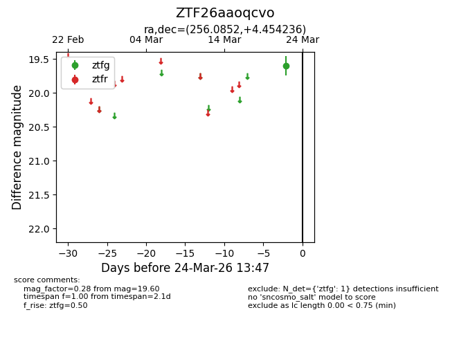
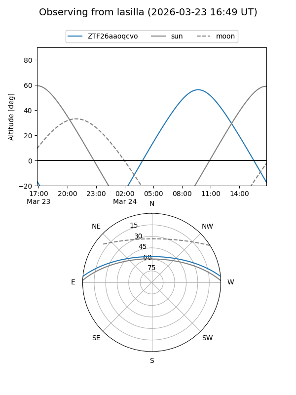
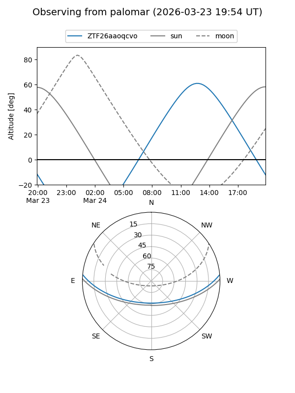

ZTF26aaoqcvo
Target ZTF26aaoqcvo at 2026-03-24 13:50
Aliases and brokers:
FINK: link
Lasair: link
ALeRCE: link
alt names
ZTF26aaoqcvo (ztf,fink_ztf)
Coordinates:
equatorial (ra, dec) = 256.0852,+4.45424
equatorial (HMS+DMS) = 17:04:20.45,+04:27:15.25
galactic (l, b) = (24.2654,+25.79300)
Flags:
Photometry:
last ztfg=19.60
1 ztfg detections
Lightcurve

Visibility


Additional plots